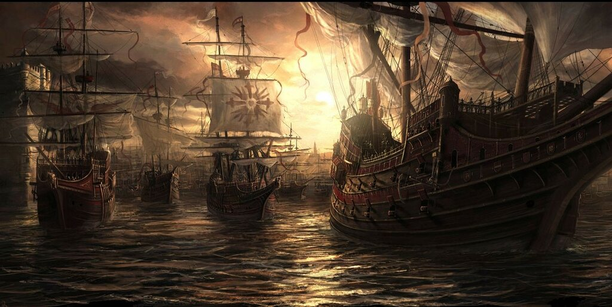
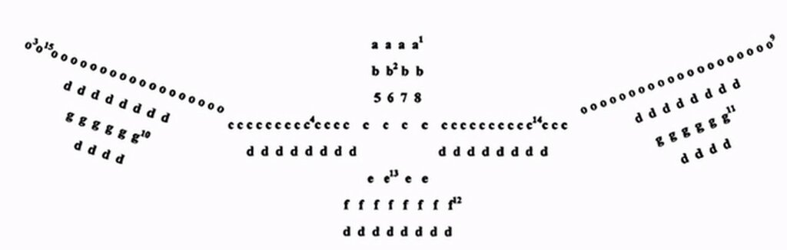

Боевой ордер Непобедимой армады
Order is Heaven’s first law.
Порядок – первый закон небес
Александр Поуп, Опыт о человеке, эпистола IV

Корабли Непобедимой Армады покидают Лиссабон. На переднем плане – флагманский галеон Сан Мартин. Художник Радо Явор.
Прежде чем продолжить изложение Дневника солдата , отражающего взгляд на поход испанской Армады участника событий с борта галеона Сан Хуан, обратимся к такому важному элементу Непобедимой Армады, как оперативное построение флота, или его боевой ордер. Ветераны из числа читателей моего журнала возможно помнят одно из ключевых решений командующего флотом Священной лиги Дона Хуана при построении боевого ордера флота при Лепанто: элементы ордера формировались не по национальному или территориальному признакам, а по функциональным соображениям. Подобный принцип частично был заложен и при боевом построении Армады. Ее территориальные эскадры (Португалия, Бискайя, Кастилия, Андалусия, Гипускоа и Левант) являлись единицами административной, а не оперативной организации Непобедимой Армады. В боевых же порядках подразделения этих эскадр были распределены на основе оперативно-тактических соображений командования о характере предстоящего сражения. Это касалось и местонахождения командующих эскадрами. Так, например, Диего Флорес де Вальдес, командующий Кастильской эскадрой, находился не на ее флагманском корабле San Cristobal, а на галеоне герцога Медина-Сидония San Martin, так как он выполнял функции начальника штаба Армады. Хуан Мартинес де Рекальде, который по административной должности являлся командующим Бискайской эскадры, в боевом ордере как заместитель командующего держал флаг на галеоне Сан Хуан эскадры Португалия, наиболее мощном и боеспособном соединении Армады.
Схема боевого ордера Армады дошла до нас в виде документа, составленного еще на ранней стадии подготовки экспедиции. Документ представляет собой секретное донесение посла Тосканы в Испании Винченцо Аламанни великому герцогу тосканскому, отправленное 25 марта 1588 года. Численный состав кораблей, отмеченных в документе (154 единицы), на 24 единицы превышает известную перепись Армады, сделанную 9 мая 1588 года, но это превышение обеспечивается за счет вспомогательных судов, в основном паташей. Боевое же ядро Армады, зафиксированное в добытом агентурным путем документе тосканского посла, практически полностью соответствует боевому корабельному составу испанского флота, который 30 июля 1588 года вошел в Ла-Манш.

Боевое построение (ордер) Непобедимой армады (Colin Martin, Geoffrey Parker)
Приведем легенду к схеме ордера (в квадратных скобках помещены авторские дополнения).
a – четыре корабля авангарда во главе с доном Алонсо де Лейва.
b – галеасы дона Уго де Монкада (Hugo de Monсada)
c – основные силы - Центр
d – паташи (переводчики с испанского на английский любят называть эти корабли пинасами; паташ и пинас – разные суда)
e – галеры
f – восемь кораблей поддержки под командой дона Педро де Вальдеса
g – корабли поддержки флангов, правый под командой Хуана Гомеса де Медина, левый – во главе с вице-флагманом галеонов (Кастилии)
o – основные силы на флангах: правый под командованием Хуана Мартинеса де Рекальде, левый - Франсиско де Бобадилья.
Наиболее значимые корабли Армады обозначены цифрами:
1. Корабль [генуэзская каракка] Рата Санта-Мария Энкоронада под командованием дона Алонсо де Лейва
2. Флагманский галеас [Сан Лоренцо]
3. Галеон Сан Маркос под командованием дона Франсиско де Бобадилья.
4. Флагманский корабль паташей [Нуестра Сеньора дель Пилар де Сарагоса] с командующим доном Антонио Уртадо
5. Флагманский корабль эскадры Рекальде под командованием Моэстре де Кампо [Николас де] Исла
6. Флагманский корабль [Мигеля де] Окендо.
7. Галеон Сан Мартин под командованием герцога [Медина-Сидония].
8. Галеон Диего Флореса [де Вальдеса], Генерала галеонов Кастилии.
9. Галеон Сан Хуан под командованием Хуана Мартинеса де Рекальде.
10. Вице-флагман галеонов Кастилии.
11. Флагманский корабль соединения урок [хольков] под командованием их генерала Хуана Гомеса [де Медина].
12. Флагманский корабль дона Педро де Вальдеса.
13. Флагманский корабль галер, Хуан Медрано.
14. Галеон Великого герцога Тосканы под командованием Гаспара де Суса, флагманский корабль эскадры Португалия
15. Корабль Регасона , флагманский корабль эскадры Левант под командованием Мартина де Бертендона.
Мы выше не даром упомянули сражение при Лепанто. Боевое построение испанской Армады основано на канонах той кампании, т.е на канонах галерной войны, смысл которой заключался в соблюдении жесткого тесного строя, сохраняемого при любом маневре флота. Ядро флота, эскадра Центра под командованием Медина-Сидония, включало более трети сил флота, (в том числе его флагманский корабль, наиболее боеспособные галеоны и четыре галеаса), усиленных транспортами снабжения. Оставшиеся силы были распределены между флангами (cuernos) ордера: левый, или авангард, под командованием Лейвы и правый, или арьегард, во главе с Рекальде. Полагалось, что Армада при таком построении способна защитить себя от любого морского противника даже при ее походном продвижении, не останавливаясь для перестроений. И точно так, как лантерны играли ключевую роль во время сражения при Лепанто в 1571 году (мы ранее писали об этом), такую же роль в 1588 году играла группа из 20 наиболее мощных кораблей Армады, помещенных в фокусах предстоящего сражения, в критических его точках. Находясь под командованием самых опытных и авторитетных командиров, эти корабли могли самостоятельно организовать бой при любом развитии ситуации, даже без связи с главнокомандующим всего флота.
Справедливости ради стоит отметить и отличие принципов боевого построения Армады от галерного ордера Священной Лиги. Строй Армады был компактным, но не столь плотным, как ордер Лиги, что давало возможность наиболее маневренным кораблям испанского флота осуществлять перемещения внутри формирования, направляясь в наиболее ответственные в данный момент места сражения. Это значительно повышало гибкость обороны как на ходу, так и во время остановки Армады.
Продолжим в следующий раз.